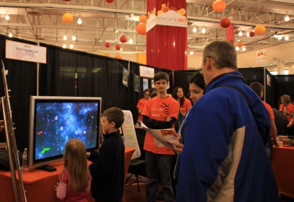

School of Media Sciences
1
2
3
4
5
6

Saturday May 3rd drew 35,000 visitors to RIT for the Imagine RIT 2014 festival. Despite weather concerns, turn out was high and about 400 projects were on display. Two of those projects were put on by Connect and the results were outstanding. PawPrint, an automated personalized story book web-application, was in its second year of being presented and we produced 671 personalized books in the 7 hours we were on display!
Check out the images below of some awesome kids participating!
Our newest addition to this years festival was CaptuRIT, a digital archive of the days events as captured by our photo booths, exhibitor submission, and photojournalist uploads. Our goal was to encapsulate the festival from all perspectives in order to create a lasting memory of the people, projects, and experiences of Imagine RIT 2014. This was our first year with this project but we hope to bring it back next year and create an even more integrated project. If you werent able to make it to Imagine this year, take a look at our websiteto get a full look into all that happened!
May 16th, 2014 by Kathryn Cooper